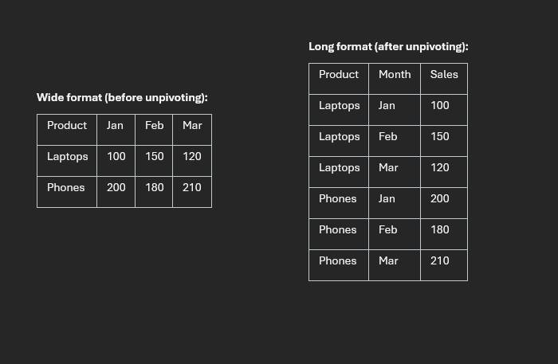
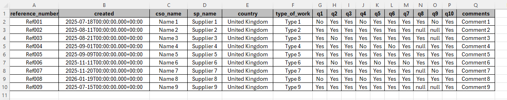
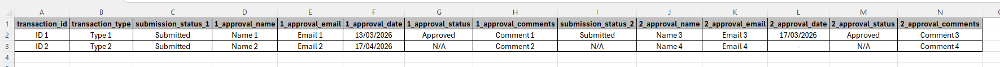

Understanding Data Transformation Methods in Databricks SQL

Why unpivoting matters
Data transformation is a core part of analytics engineering, and unpivoting is one of the most common reshaping tasks. The goal is to move data from a wide structure (many columns) into a long structure (fewer columns, more rows) so it is easier to filter, aggregate, and visualize.
In this post, I walk through three practical methods in Databricks SQL: UNPIVOT, CROSS JOIN + CASE, and LATERAL VIEW + STACK, including when each method is the best fit.
Starting wide table:

Dataset used in this walkthrough
The source survey table includes identifier columns like reference_number, cso_name,
sp_name, and response columns q1 through q10. The transformation objective is to
convert those ten question columns into:
question_numberresponse
Method 1: UNPIVOT
UNPIVOT is the most readable option for standard transformations. It is purpose-built and very clear to maintain.
Tip: click a highlighted SQL line or its note to focus that explanation.
SELECT: choosing your columns
SELECT tells the database which columns you want in your result. Only these fields appear, and
everything else in the table is ignored.
question_number (generated by UNPIVOT)
This column does not exist in the original wide table. UNPIVOT creates it to hold
labels like q1, q2, and so on, so each row clearly indicates which question it belongs to.
response (generated by UNPIVOT)
Also created by UNPIVOT. This is the answer value associated with the
question_number on that row; one row equals one answer to one question.
FROM: your data source
Replace your_data_location with the real table or view name in your Databricks environment
(for example survey_responses).
UNPIVOT: the core transformation
UNPIVOT reshapes a wide table into a long table. Instead of one row with many
question columns, you get one row per question response, which is easier to filter, aggregate, and visualize.
response FOR question_number IN (...)
This line defines the unpivot mapping: response becomes the new value column,
question_number stores the original column name (q1 to q10), and
IN (...) lists which columns to collapse.
ORDER BY: sorting the result
Sorts output first by reference_number (grouping each respondent), then by
question_number so responses appear in question order.
Best for: clear, maintainable, standard unpivoting with minimal custom logic.
Method 2: CROSS JOIN + CASE
This approach is verbose but highly flexible. You explicitly generate row combinations and map values with a
CASE expression.
SELECT: choosing your columns
SELECT tells the database which columns you want in your results. Everything listed here appears in
the output and anything else is excluded.
question_number: comes from the CROSS JOIN
This is created by the CROSS JOIN section. It gives each row a label like 'q1' or
'q7' so you know which question that row represents.
CASE: picking the right answer column
This is the manual lookup replacement for UNPIVOT. For each row, the value in
question_number is checked against each WHEN branch and returns the matching column
value. If question_number = 'q3', the row returns the value from column q3.
END AS response: naming the result
END closes the CASE expression. AS response gives the result a clean
output name.
FROM: your data source
Replace your_data_location with your actual table or view name that stores the wide-format responses.
CROSS JOIN VALUES(...): generating question labels
CROSS JOIN pairs each respondent row with every label listed in VALUES. That duplicates
each respondent row 10 times (q1 to q10), producing the tall row shape needed for analysis.
AS questions(question_number): naming the inline table
The inline VALUES table needs an alias (questions) and a column name
(question_number) so it can be referenced in SELECT and CASE.
ORDER BY: sorting the output
Sorts first by reference_number to keep each respondent together, then by
question_number so q1 to q10 appear in order.
Best for: custom transformation logic and cross-platform SQL portability.
Method 3: LATERAL VIEW + STACK
In Spark and Databricks environments, STACK is compact and performant, especially with many columns.
SELECT
SELECT tells the database which columns you want in your results. Only these columns appear in the
output; everything else in the table is ignored.
question_number and response: generated columns
These columns do not exist in your original table. They are produced by LATERAL VIEW stack(); each row
gets a question label (for example 'q4') and the matching answer value.
FROM: your data source
Replace your_data_location with the real table or view name in your database, such as
survey_responses. This is where the original wide-format data lives.
LATERAL VIEW: connecting generated rows to the main table
LATERAL VIEW applies a table-generating function to each row of the main table, then joins the output
back automatically. This is what expands each respondent row into 10 rows.
stack(10, ...): the transformation engine
stack() does the heavy lifting. The first argument (10) tells SQL to produce 10 rows per
respondent from the following label/value pairs.
'q1', q1 ... 'q10', q10: label/value pairs
Each pair maps a hardcoded label (like 'q1') to its corresponding data column
(q1). The label goes to question_number; the value goes to response.
AS question_number, response: naming generated columns
This aliases the two columns returned by stack(). The names must match what you reference in the
SELECT list.
ORDER BY: sorting the output
Sorts first by reference_number (keeping respondent rows together), then by
question_number so q1 through q10 appear in order.
Best for: Databricks/Spark-first workloads where performance and compact syntax matter.
Advanced case: unpivoting column groups
Some models store grouped columns by stage (for example, stage 1 and stage 2 approval fields). Both
UNPIVOT and STACK can reshape these while preserving field relationships.
More advanced wide table:

SELECT
SELECT tells the database which columns you want in your results. Only these columns appear in the
output; everything else in the table is ignored.
approval_stage, approval_name, approval_email, approval_date, approval_status, approval_comments: generated columns
These six columns do not exist in the original table. They are produced by LATERAL VIEW stack() so each
output row carries one stage label and the full set of approval details for that stage.
FROM: your data source
Replace your_data_location with your actual table or view name that stores the wide-format responses.
LATERAL VIEW: connecting generated rows to the main table
LATERAL VIEW applies a table-generating function to each source row and stitches the result back
alongside it. Here it expands each transaction into two rows, one for each approval stage.
stack(2, ...): the transformation engine
stack() reshapes a flat list into multiple rows. The first argument (2) tells SQL to
produce two rows per transaction, one for each stage group.
'Stage_1' ... and 'Stage_2' ...: the two stage groups
Each group maps a hardcoded stage label to its corresponding approval columns. The label becomes
approval_stage and the other fields become approver details for that stage.
AS approval_stage, approval_name, ...: naming generated columns
This aliases all columns returned by stack(). These names must match what is referenced in the
SELECT list.
ORDER BY transaction_id
Sorts output by transaction_id so both stage rows for each transaction stay grouped together.
UNPIVOT for readability, CROSS JOIN + CASE for
maximum customization, and LATERAL VIEW + STACK for Spark-native performance and scale.
Method comparison
- Readability: UNPIVOT (best), CROSS JOIN + CASE (good), STACK (moderate)
- Flexibility: CROSS JOIN + CASE (best), STACK (good), UNPIVOT (limited)
- Performance: STACK (best in Spark), UNPIVOT (good), CROSS JOIN + CASE (moderate)
- Portability: UNPIVOT and CROSS JOIN + CASE (high), STACK (Spark-only)
The Last Thread
There is no single "perfect" unpivot strategy. The right method depends on your platform, performance requirements, and how
much transformation logic you need during reshaping. If your team works primarily in Databricks, having all three patterns in
your toolkit gives you the flexibility to handle both simple and complex transformations with confidence.
Rob.